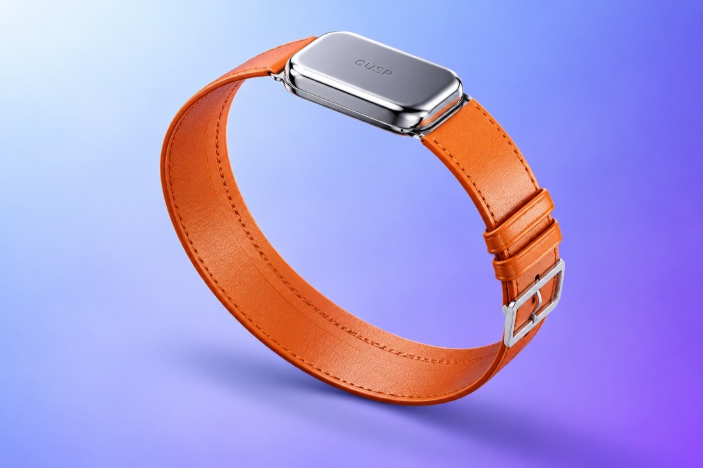
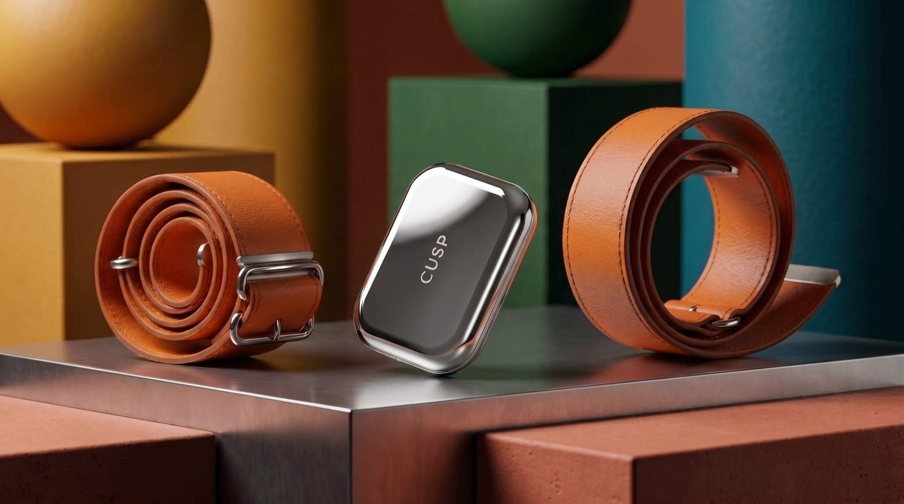
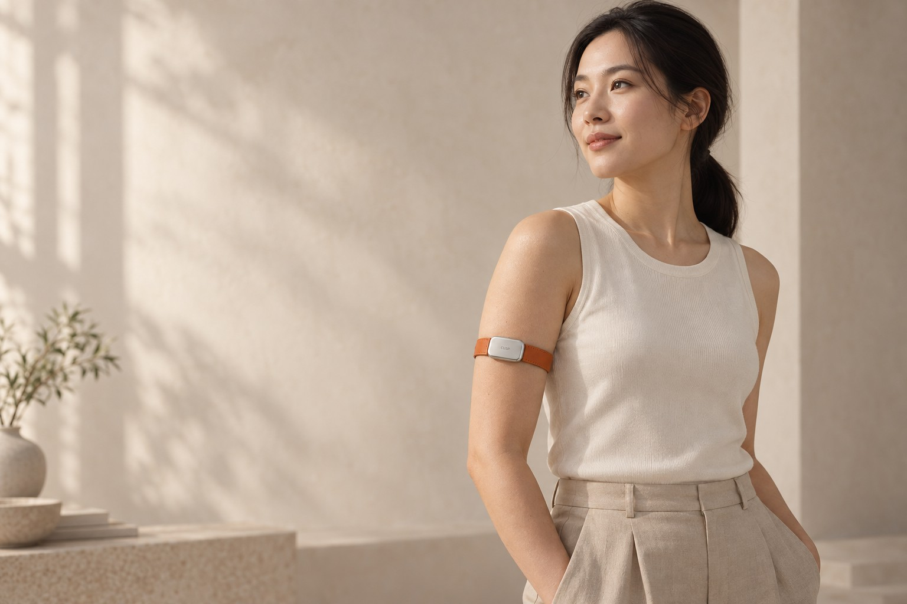

Remember your baseline
Compare today with your own history.
Wearable, lifestyle and glucose data, understood through one personal history.

A workout. A meal. A restless night. Most health tools see these as separate numbers. CUSP connects them to the same person, over time.
The wearable is the sensing entry point. The app brings physiology and daily life together. Community keeps people engaged. The core is a longitudinal understanding of what is normal for you—and what is changing.
Compare today with your own history.
Connect physiology with meals, training and sleep.
Keep high-quality observations valuable over time.
A high-quality measurement can inform today and remain part of your personal history. Meals, training, sleep and physiology give that episode meaning, so later observations can be compared with your own baseline.
One screenless body. Interchangeable, adjustable straps for wrist or upper-arm wear. A sensing concept that leaves room for life.

A consistent core, with materials and strap lengths that fit different routines.

Start with compatible wearables and optional CGM. The CUSP hardware is a product exploration alongside the service.
Your account and personal history stay continuous. Available data determines the depth of interpretation.
Connect movement, meals, sleep and wearable signals to your personal baseline. Understand patterns while keeping measurement burden low.

Daily briefings, contextual logging, training, recovery and community—connected in one experience.
CUSP / ENGLISH PROTOTYPEAn English product prototype covering the journey from onboarding to daily habits, device quality and support.
Try the official prototypeGuided assistant; community, device pairing and payments are demonstrated as prototype flows.Explore the MD6204 Official prototype. Tap through the screens and use the viewer controls to restart or go full screen.
Guided product prototype. Illustrative values and simulated service flows.
Physiology tells part of the story. Meals, movement and sleep add context. Personal history helps interpret what a change means for you.
What is changing for this person?
What habits deserve attention?
What can this observation add to the future?
Gather daily signals.
Build your own baseline.
Put today beside your past.
Keep useful reference episodes.
The course prototype implements a reproducible path from data to forecast, structured state and bounded interpretation.
Public BIG IDEAs dataset
Initial Ridge baseline
Participant-isolated evaluation
11,873 five-minute records; separate participants for training, validation and test. The baseline uses recent glucose history and meal-carbohydrate context. Held-out RMSE: 13.30 mg/dL.
These initial metrics describe one documented experiment, not clinical accuracy or deployment readiness. EDA, temperature and movement are concept channels, not inputs to this four-participant baseline.
Next research question: how much sparse, high-quality glucose reference—and how much personal history—is enough for the target task?
Shared routines turn health awareness into something you can keep doing. Community is the participation layer of CUSP, connecting digital insight to life beyond the screen.
Training, walking and recovery challenges.
Campus and fitness events as a proposed engagement model.
A pathway to qualified partners for metabolic testing and professional discussion.
Programmes, events and partner networks are proposed; no live registration or confirmed partnerships are represented here.
Consumer wellness and professional follow-up share the same longitudinal core, with different users and responsibilities.
The initial entry point: metabolic wellness and everyday habits.
The accumulating asset: one person’s history, context and response patterns.
The next stage: consent-based records, recovery trajectories and professional review between appointments.
A daily briefing connects physiology, meals, movement and sleep to your personal baseline.
With measured CGM data, explore meal and activity responses alongside your own history.
Compare trends and past episodes across weeks and months, with data quality made visible.
Post-discharge and Hospital-at-Home follow-up are the proposed starting points. With user consent, ECR—a working name for the longitudinal care record—would organise recovery, activity, sleep, metabolic references and key events for professional review.
The professional layer is a roadmap direction. Follow-up decisions remain with qualified care teams; clinical decision-support requires independent validation.
Connect the personal baseline, recent changes, key events and data quality on one timeline.
Compare recent observations with the person’s own history and highlight sustained deviations for human review.
Help teams consider who to review first and what further assessment may be useful.
Standardised, on-site professional devices and offline-capable monitoring. A proposed pathway for sport, offshore work and extreme environments.
Professional device calibration and a separate personal baseline.
Preserve long-term sleep, workload and recovery context—even offline.
Support workload adjustment, recovery planning and professional review.
Future deployment concept. Preventive benefit requires validation; qualified professionals make clinical decisions.
Reproducible data pipeline, app flows, hardware concept and complete product story.
Test engagement and willingness to pay; study personal history, sparse reference and reliability.
Build an ECR prototype and test post-discharge or Hospital-at-Home trajectory review with qualified partners.
Independent clinical evidence, governance and regulatory work before decision-support claims.
Explore sensing, personal intelligence and life across settings. Select any module to read its purpose and development scope.
CUSP brings product design, clinical thinking, AI engineering and growth into one project.
Chief Executive Officer
Chief Technology Officer
Head of Product Design
Head of Clinical Product
Head of Growth & Marketing
Team roles follow the MD6204 classroom company presentation. CUSP is presented here as a research and product concept.